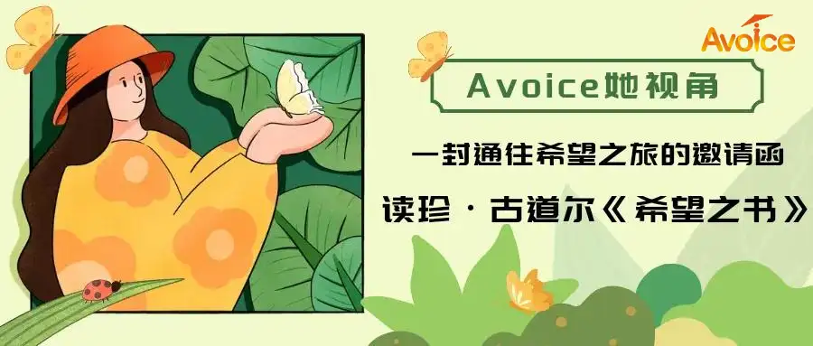
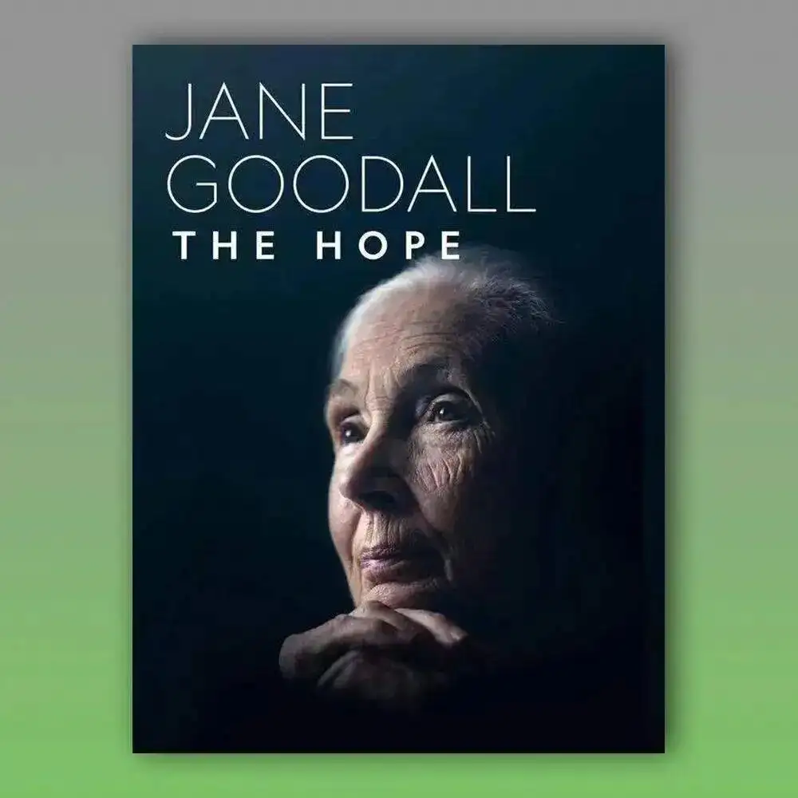
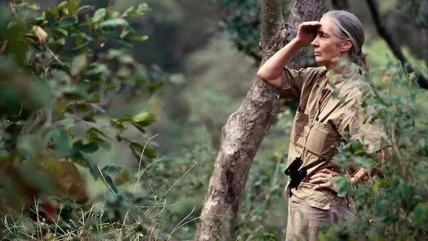

我们正在经历一个黑暗的时代，而“希望”是即使被黑暗包围也能预见光明的能力，你的行动会激发他人的行动，愿你在这个充满痛苦、不确定性和忧惧的时代找到慰藉、方向和勇气。——珍·古道尔
一场伟大的冒险
《万物生灵》是一部改编自同名小说的英剧，讲述了二战前夕，一位年轻的兽医在毕业后，到英国乡间从事兽医工作，救助动物，以及和小镇居民间温暖而治愈的故事。
珍•古道尔也是如此。从一名年轻女士到全球公众演说家，作为研究学者，她一直致力于为世界带来“希望”，通过建立“根与芽”组织和创立“关爱”项目，不仅帮助贫困女性获得小额贷款、接受教育，从而摆脱贫困，也经由首先关爱人，使人有更多的能力去关爱自然。使命的召唤让珍走出了自己的舒适区，找到力量，用天赋、智慧和脚踏实地，开启了一场伟大的冒险。

“希望”的意义
珍讲过一个关于中国农村的故事：贾海霞和贾文其种了1万余棵树，帮助恢复村庄周围退化和污染的土地，而这两个人，一个看不见，一个没有胳膊。
“希望”是一种不屈的精神，就如同苦难，可以使人痛苦，也能使人高尚，重要的在于个人的选择。如果我们可以从苦难中获得意义，使自己和他人受益，那么苦难也会成为人生的礼物。
巴别塔之难
《圣经·旧约·创世记》中记载过，人类曾经联合起来，兴建一座通往天堂的高塔，但上帝知晓了人类的计划，为了阻止人类，让人类讲不同的语言，使其无法沟通，从此“巴别塔”计划失败，人类各奔东西。“第六次大灭绝”，60%的哺乳动物、鸟类、鱼类和爬行动物从地球上消失了。人类不仅由于语言的障碍，导致互相之间无法沟通，还因为缺乏对自然的尊重，造成了生态环境的“巴别塔之难”。
20世纪60年代，蕾切尔•卡森《寂静的春天》出版，阐述了DDT杀虫剂对生态造成的巨大破坏。“理解方能关心，关心方能助人，助人方能助己。”尽管站在灭绝边缘，人类仍有希望通过行动获得救赎。唐•莫顿将极度濒危的稀有品种知更鸟从灭绝边缘拉了回来，到今天，已经大概有250只知更鸟了。珍在贡贝开展了小额贷款项目，帮助当地女性摆脱贫困，接受教育，并成为贡贝开展保护工作的合作伙伴。

聚石成山
真正的希望需要行动和承诺，再微小的行动也能带来改变，希望不否认任何存在的苦难和危险，但也不会被它们所困，采取行动并意识到每个人都能带来改变是至关重要的，我们需要树立现实的目标，和能够实现它们的路径，同时，还需要有实现这些目标的信心，以及克服沿途困难的支持， 社会支持对于保持希望至关重要。
珍认为人们应该带着孩子走进大自然，从实践中学习。1991年，珍启动了青年项目“根与芽”，它的主要理念是“每个个体都重要，每个个体都能发挥作用，我们的选择，决定带来怎样的不同。” 她认为，即使是小孩儿，也能促成真正的改变。
在乌干达，一群女童举起了写着“让村庄永葆绿色”的牌子，呼吁保护生态环境；在坦桑尼亚，“根与芽”小组成员们发挥着他们的作用并积极践行着组织的价值观：知识、同情、行动；刚果共和国的孩子们正准备去参加一个植树项目……今天的年轻人不仅更有见识，对决策和政治进程的参与也更多了，即使在最绝望的环境下，只要人类仍相信希望，改变就来得及，未来掌握在我们自己手中。
1
1
撰文｜Jane
排版、封面｜白皓瑞
图片 | Freepik